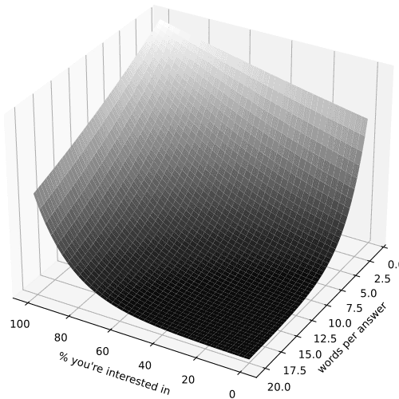

Anki is a flashcard program that helps you spend more time on challenging material, and less on what you already know.
I use it heavily to help me learn and remember. Here's how.
I put notes in Anki for anything that I want to remember, that I might not remember naturally, and that I know how to express as Anki cards. I write those notes into Anki on my laptop. When I learn away from my laptop, I write a draft of the requisite Anki note on paper, to be input when I get back.
My smartphone has AnkiDroid (a port of Anki), synced with my laptop by AnkiWeb. When I'm bored and can use my phone, I usually open AnkiDroid and start reviewing. It takes a bit to finish my hundred-or-more reviews each day. Only after that do I do more normal bored-with-a-phone things.
Anki expects you study every day. To keep that up, especially in the beginning, you need to make studying easy and fun. Ease depends mainly on two factors that you can control:
The ease of studying goes something like

Stay away from the Valley of Study Fatigue. I mix academics, some of it boring, with more fun things like weiqi and xkcd comics.
I make the answer to most cards five words or less. It helps to abbreviate and be grammatically lazy: what matters is that cards make sense to yourself, who will study them. So I write e.g. "logical ops on clock signal" instead of "clock signal is used only after logical operations." (Don't put logical operations on your clock signal. It causes clock skew, which is bad.) By symmetry in how I make cards, this practice also leads to short questions.
If items in a topic all have the same structure:
then I make a custom note type for it, and mindlessly fill in fields. Otherwise, I think at some length to arrange material into Yukogurafu's highly flexible Directed Graph note type.
To keep cards homogeneous, I make any custom note type generate cards much like those that I'd get from a Directed Graph. That is, the front of a card is a bolded short subject name:
pythen a term or phrase, then a bolded interrogative word:
And the back of a card is a term or phrase as an answer.
Each little topic turns into one graph note. Each node in the graph is a concept, term, or proposition. Each edge is a type of question that leads from one to another. Some common types of questions, with examples:
| Pattern | Start node | Edge | End node |
|---|---|---|---|
| expand short term to definition | data race | long | concurrent access on one variable |
| contract description to term | concurrent access on one variable | short | data race |
| match concept to application | Dijkstra's algorithm | why | shortest paths from one node to all others |
| match task to method | return to start of file | how | rewind(f) |
| identify context or origin | order partition in-place | where | quicksort |
| identify mistake or disadvantage | wc -c FNAME | why not | avoidably reads file |
| improve flawed attempt | wc -c FNAME | fix | stat '%s' FNAME |
| explain novel part of phrase | i = iS (exp(v / (n vT)) - 1) | iS? | reverse saturation current |
| specify prereqs of theorem | ap ≡ a (mod p) | when | p prime |
| express new variable from familiar ones | intensity | from E | c ε Erms2 |
I ask as many questions about each topic as I reasonably can, and make an edge in the note (hence a card) for each. Sometimes these questions go outside the range of common types. The thought it takes to make good notes provides a lot of the learning, even before any reviews.
Even routine questions with custom note types are designed like directed graphs. I just do that design only once for each such note type.
The main exception to this process is, again, foreign language. I use Permuted Sentences to learn Biblical Hebrew.
In principle, you could use Sentence Translation notes for any pair of languages. Perhaps even programming languages. I have not tried that. Yet.
Flashcards are organised into decks. To review cards, you pick a deck, and are shown cards that you know all come from that deck. Interleaving topics helps you learn them better. So I mix most subjects into one Default deck.
The exception is foreign language. If you alternate languages too readily, you mix them up, and likewise between any foreign language and conceptual native-language material. So I keep Biblical Hebrew in a separate deck.
If you study disparate topics interleaved, homonyms can trip you up. A card might ask what R represents. Maybe the expected answer is the universal gas constant, but you could also answer "radius", or "electrical resistance." To fix that, have the card ask what R represents in chemistry, while another might ask what R represents in geometry or in EE. The subject name at the start of a card serves exactly that disambiguating role.